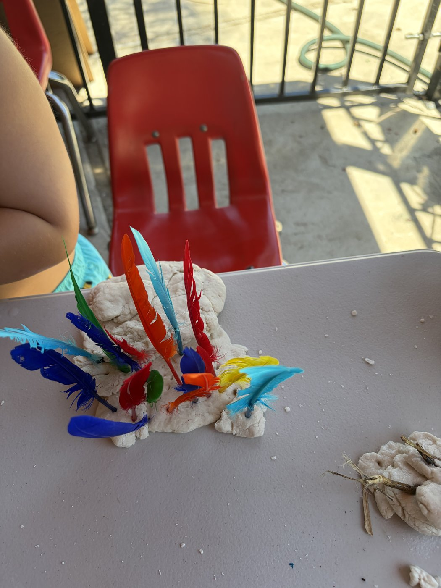
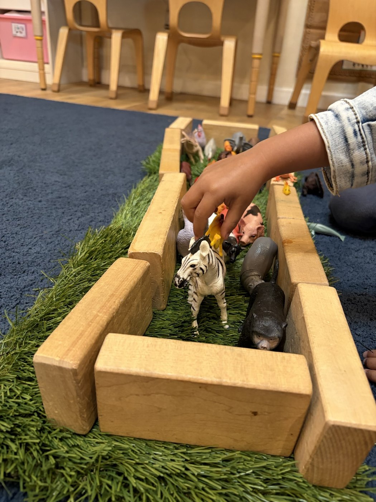
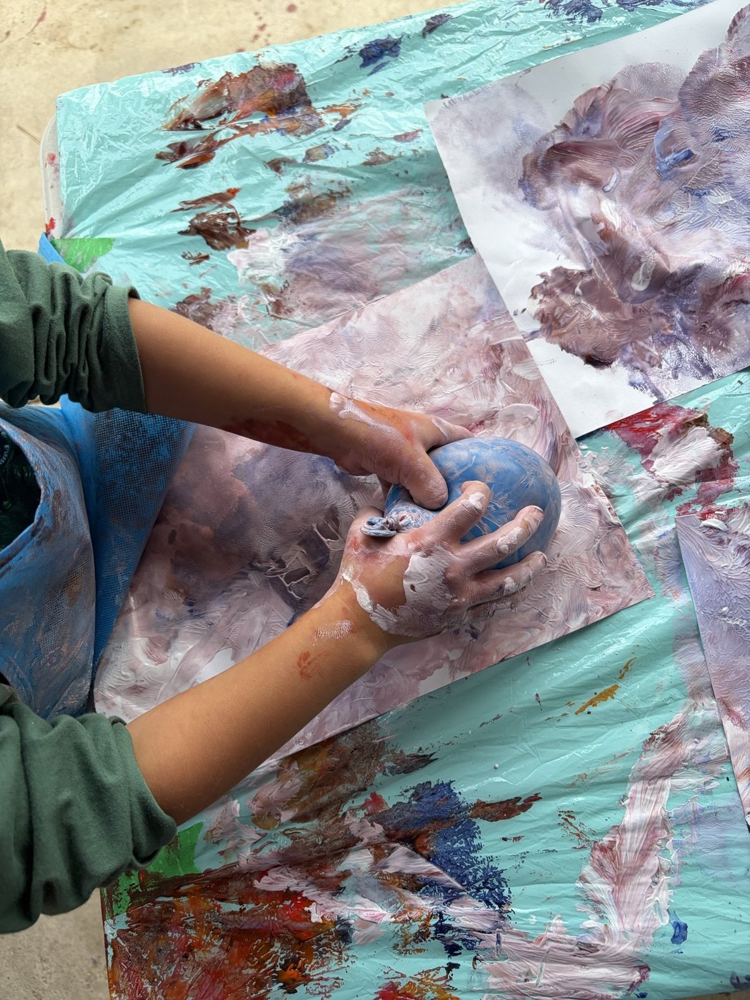
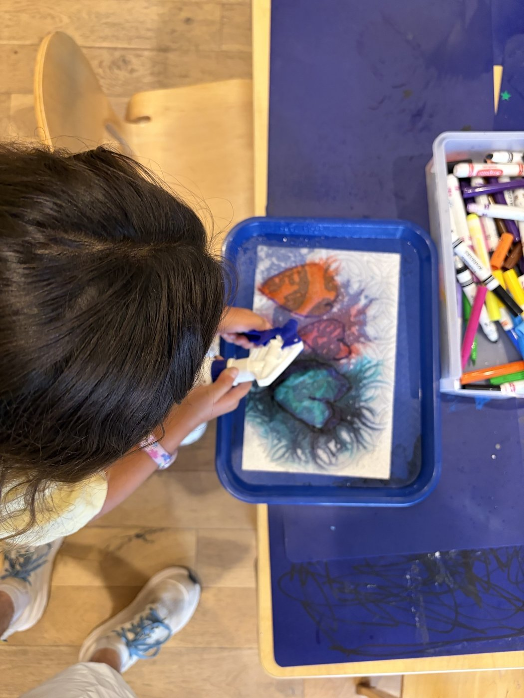
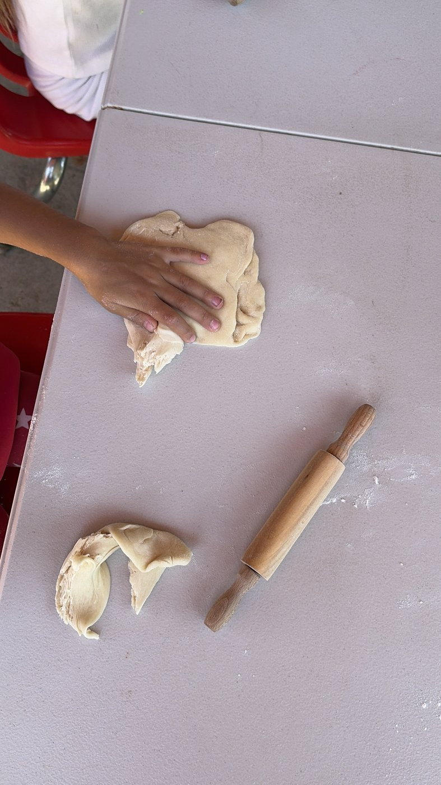
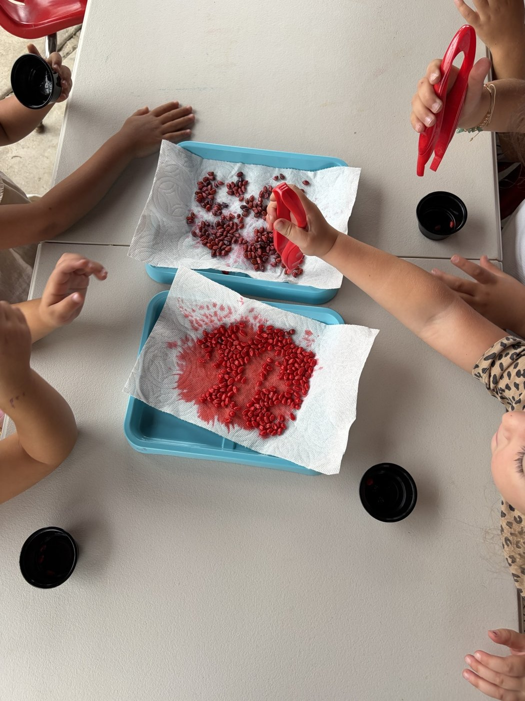
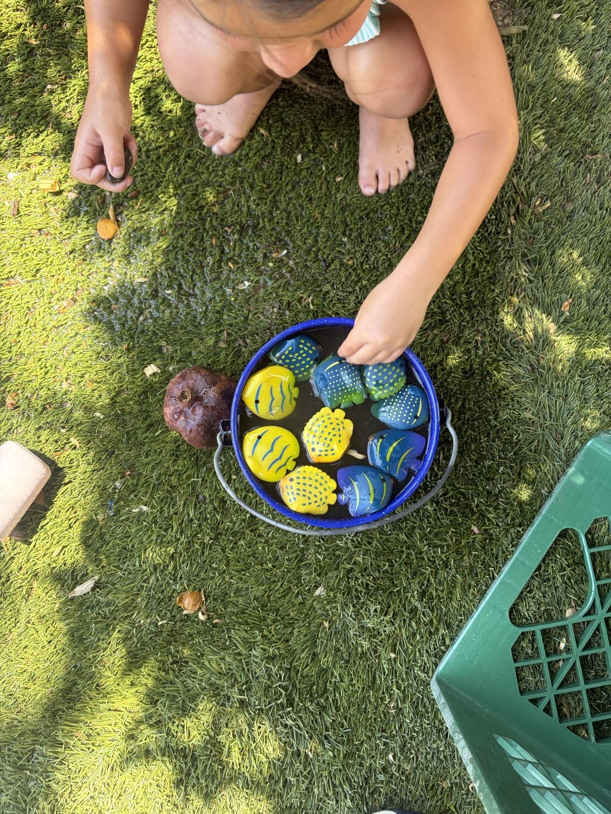
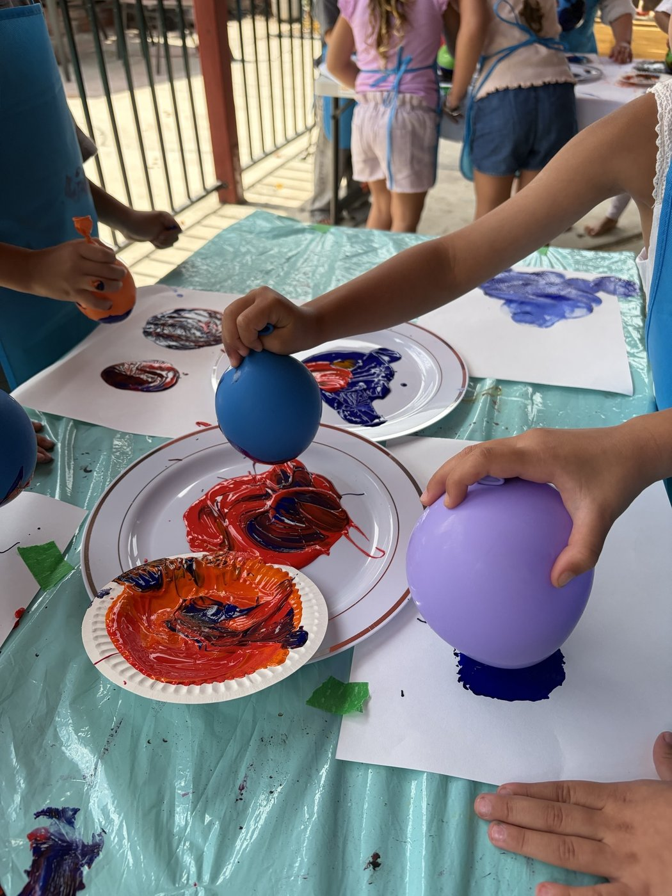
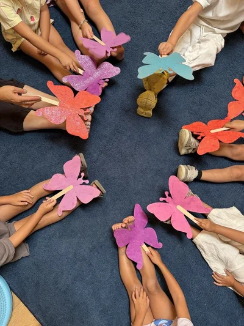
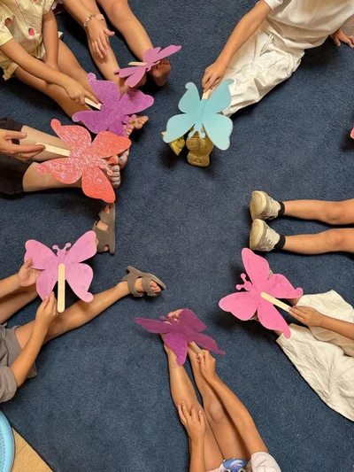

A Warm, Personalized Preschool in Winnetka for Ages 3–5
Small-group, play-based Pre-K learning in a nurturing home environment where every child is known and supported.
Schedule a Tour See Our ProgramLicensed by CA Dept. of Social Services • CDSS License #197312451 • Ages 3–5 • 6:1 Ratio

Welcome to Revital Daycare
Revital Daycare is a family-owned preschool nestled in the heart of Winnetka, California. Founded by Revital Edry, a passionate early childhood educator with over ten years of experience, our center was created with a simple but powerful belief: children thrive when they are surrounded by caring adults who truly know them. We are licensed by the California Department of Social Services (CDSS License #197312451) and serve families from Winnetka, Woodland Hills, Canoga Park, and Chatsworth.
Unlike large chain daycares, Revital offers an intimate, home-like setting where your child is not just another face in the crowd. Our small size means we can focus on each child's unique interests, learning style, and developmental needs. Parents consistently tell us that their children are excited to come to school each morning — and that's the best compliment we could ask for. If you are looking for a preschool that balances structured learning with joyful play, we invite you to schedule a tour and see Revital for yourself.
More Than Childcare. A Place to Grow.
At Revital, we believe young children learn best when they feel safe, loved, curious, and connected. Our approach combines structured early learning with the freedom to explore, creating an environment where children develop confidence, independence, and a genuine love of learning that carries them into kindergarten and beyond.
Small & Personal
A home-like environment where children receive individual attention and are truly known. Our small group size means teachers can tailor activities to each child's interests and developmental stage, fostering deeper engagement and faster growth.
Play-Based Learning
Inspired by Reggio Emilia, our curriculum lets children lead their own discovery through art, music, sensory play, and hands-on exploration. Children develop early literacy, numeracy, and problem-solving skills naturally through play-based activities designed to spark curiosity.
Growing Independence
Children explore, create, and discover at their own pace, making choices, building confidence, and solving problems. Our nurturing environment encourages children to take healthy risks, try new things, and develop the independence they will need in elementary school.
Strong Family Communication
You will never wonder how your child's day went — we share photos, activity updates, and milestone notes through our parent communication app so you stay connected even during a busy workday. Many parents tell us these updates are the highlight of their afternoon.
What Does a Day at Revital Look Like?
Every day combines learning, play, creativity, movement, social connection, and plenty of opportunities for children to explore at their own pace.
Morning Welcome
A warm, predictable start that helps every child settle in and reconnect with friends.
Learning Through Play
Hands-on centers that weave early literacy, math, and science into imaginative play.
Creative Exploration
Art, music, and dramatic play where expression and creativity lead the way.
Outdoor Play
Fresh air, physical activity, and nature exploration on our secure playground.
Friendships & Social Learning
Guided sharing, turn-taking, and problem-solving that build empathy and teamwork.
Rest & Recharge
A calm wind-down with quiet reading or soft music to restore energy.
Specific arrival, midday, and pickup times are shared during tours — book a visit to see the full rhythm.
Come See Where Your Child Will Learn, Play & Grow
Real moments from our home-like classroom and outdoor space in Winnetka.







Why Families Choose Revital
Choosing childcare is a big decision. You want a place where your child is safe, cared for, learning, and genuinely happy to be there.
Licensed Family Childcare
Regularly inspected and fully licensed by the CA Department of Social Services (License #197312451).
Small-Group Environment
Our low 6:1 child-to-staff ratio ensures every child gets personalized attention.
Play-Based Learning
A curriculum inspired by Reggio Emilia that grows curiosity, creativity, and confidence.
Ages 3–5
Developmentally matched activities for preschoolers and pre-K children.
Daily Parent Communication
Photos, updates, and milestone notes keep you connected to your child's day.
Social-Emotional Development
Structured opportunities to share, take turns, and build lasting friendships.
Safe, Nurturing Environment
Secure entry, CPR/First Aid-certified staff, and regular safety routines.
Loved by Families
★★★★★
"Revital has been wonderful for our daughter. The staff is caring and attentive, and we love seeing how much she's grown!"
★★★★★
"My son looks forward to coming to daycare every day. The activities are creative and the communication with parents is excellent."
★★★★★
"Professional, clean facility with staff who genuinely care about the children. Highly recommended to any family in Winnetka!"
Learning Designed for the Early Years
Our program is designed to meet children where they are and help them take their next steps with confidence.
Preschool (Ages 3-4)
Kindergarten-readiness foundations built through hands-on learning and play.
- Pre-K curriculum
- Academic readiness
- Structured learning activities
Pre-K & Kindergarten Prep (Ages 4-5)
Confident transition to elementary school through early literacy and problem-solving.
- Early literacy and phonics
- Math and problem-solving
- Social-emotional and self-regulation skills
Meet the People Behind Revital
Revital was created with a simple belief: children thrive when surrounded by caring adults who truly know them.

Revital Edry
Teacher & Founder
Revital is a dedicated early childhood educator with 10 years of experience working with preschool-aged children.

Itamar Nadjar
Assistant
Questions We Hear
What ages does Revital serve?
We serve children ages 3 through 5 years in our preschool and Pre-K programs.
Where is Revital Daycare located?
20628 Londelius St, Winnetka, CA 91306. Conveniently serving families in Winnetka, Woodland Hills, and Canoga Park.
What are your hours?
Monday through Friday, 6:30 AM to 6:00 PM. We're closed on weekends and major holidays.
What is your child-to-staff ratio?
We maintain a low 6:1 child-to-staff ratio across our preschool programs.
How do I schedule a tour?
Contact us by phone, email, or the form on our Contact page. Tours are free and available throughout the week.
Is Revital licensed?
Yes — we are licensed by the CA Department of Social Services (CDSS License #197312451).
Serving Families Across the West Valley
Revital Daycare is conveniently located in Winnetka, just minutes from the Ventura (101) Freeway. We welcome families from throughout the West San Fernando Valley.
Winnetka
Our home base. A nurturing preschool right in your neighborhood on Londelius Street.
About Our LocationWoodland Hills
Quality early education just minutes from Warner Center and The Village.
Preschool for Woodland HillsCanoga Park
Nurturing preschool options conveniently located near Topanga Canyon Blvd.
Preschool for Canoga ParkChatsworth
Quality childcare for families near the Devonshire and Plummer corridors.
Preschool for ChatsworthCome Meet Us
The best way to know whether Revital is the right fit is to come see it for yourself. Take a tour, meet us, and ask every question you have.
Schedule a Tour Contact RevitalLove Revital Daycare?
Share your experience and help other families find us!
⭐ Leave a Google Review